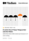
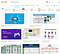

Cognitive glasses

Given this thing, idea, or concept that is on top of this sorted stack that we have in our brain for things interesting. This thing on the top of this stack defines the pair of glasses we wear because we will see things according to this peculiar thing. It is sure that our vision keeps being filtered by all these pairs of glasses that our brain builds using the most actual interesting things in our mind. These glasses make us see what we would not notice if we were not wearing them. For example, if games design was not such a buzz concept in my mind, I could never see a game idea with this simple image

This umbrella helps you when it is rainy. what if you were this man that holds it for this king won't touch the water?
